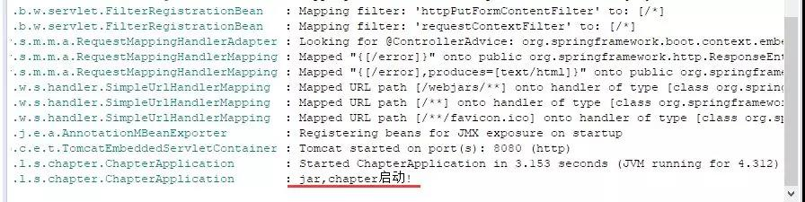

您现在的位置是：网站首页>>信息浏览 文章详情
今天整理一下SpringBoot修改一些小东西，如网站图标啊 ，banner啊，，独立运行啊，跨域问题等等
设置网站图标
原来我们在使用tomcat开发时，设置网站图片时，即icon图标时，一般都是直接替换root包下的favicon.ico替换成自己的，或者在网页的头部设置link的ref为icon然后设置其href值。而在SpringBoot中，替换图片也是很简单的，只需要将自定义图片放置在静态资源目录下即可，即默认有static、public、resources、/META-INF/resources或者自定义的静态目录下即可。
那怎么关闭图标呢，我们在配置文件中配置这个
spring.mvc.favicon.enabled=false//默认开启
允许跨域访问
CORS是一个W3C标准，全称是”跨域资源共享”（Cross-origin resource sharing）。它允许浏览器向跨源(协议 + 域名 + 端口)服务器，发出XMLHttpRequest请求，从而克服了AJAX只能同源使用的限制。
简单来说，跨域问题是可以通过nginx来解决的，或者通过jsonp(只支持get请求)来解决。而SpringBoot中也提供了配置方法。
0.利用@CrossOrigin注解，可放至在类上或者方法上。类上代表整个控制层所有的映射方法都支持跨域请求。
@CrossOrigin(origins = “http://blog.lqdev.cn“, maxAge = 3600)
@RestController
public class demoController{
@GetMapper(“/“)
public String index(){
return “hello,CORS”;
}
}
1.配置全局CORS配置。官网也有给出实例，具体如下：
@Configuration
public class MyConfiguration {
@Beanpublic WebMvcConfigurer corsConfigurer() {return new WebMvcConfigurerAdapter() {@Overridepublic void addCorsMappings(CorsRegistry registry) { registry.addMapping("/api/**").allowedOrigins("https://blog.lqdev.cn");}};}
}
独立Tomcat运行
讲解了这么久，一般上我们都是通过jar包的方式进行启动的应用的。所以部署在独立的tomcat时，需要如何解决呢？其实也简单，只需要将项目打包方式修改为war包，然后修改下启动类配置即可。
0.修改pom打包方式为war，同时排除了内置的tomcat。
<packaging>war</packaging>
<!-- 排除内置的tomcat -->
<dependency><groupId>org.springframework.boot</groupId><artifactId>spring-boot-starter-tomcat</artifactId><scope>compile</scope></dependency>
<!-- 若直接有使用servlet对象时(这是废话，⊙﹏⊙‖∣)，需要将servlet引入，本例是没有的~ -->
<dependency><groupId>javax.servlet</groupId><artifactId>javax.servlet-api</artifactId><scope>provided</scope></dependency>
1.改造下启动类，使其继承SpringBootServletInitializer,同时覆盖configure方法。
@SpringBootApplication@Slf4jpublic class ChapterApplication extends SpringBootServletInitializer{public static void main(String[] args) {SpringApplication.run(ChapterApplication.class, args);// new SpringApplicationBuilder().sources(ChapterApplication.class).web(false).run(args);//之后这里设置业务逻辑 比如挂起一个线程 或者设置一个定时任务。保证不退出//不然它就是一个启动类，启动后就停止了。log.info("jar,chapter启动!");}@Overrideprotected SpringApplicationBuilder configure(SpringApplicationBuilder application) {log.info("外部tomcat,chapter启动!");return application.sources(ChapterApplication.class);}}
2.maven打包成war(mvn clean install),然后放入tomcat中，启动运行即可。
其实这样设置的话，在开发时直接运行启动类也还是可以直接运行的，方便.

启动不设置端口
对一些定时任务服务项目，其本身只是提供一个定时调度功能，不需要其他服务调用，只是去调度其他服务。像这样的服务，正常也就不需要设置端口了。这时候SpringBoot也是支持的。只需要改下启动方式：
new SpringApplicationBuilder().sources(ChapterApplication.class).web(false).run(args);
//之后这里设置业务逻辑 比如挂起一个线程 或者设置一个定时任务。保证不退出
//不然它就是一个启动类，启动后就停止了。
或者修改配置文件的属性：
spring.main.web-environment=false
最后效果，是不是没有看见端口了：
启动完成前进行业务逻辑
利用CommandLineRunner或者ApplicationRunner可实现在SpringApplication的run()完成前执行一些业务逻辑
0.修改启动类，实现CommandLineRunner接口,ApplicationRunner类似，只是run的入参不同而已。
@Overridepublic void run(String... args) throws Exception {log.info("CommandLineRunner运行");}
1.运行应用，注意查看控制台输出：
当然，直接申明一个bean也是可以的。
@Configuration@Slf4jpublic class CommandLineRunnerConfig {@Beanpublic CommandLineRunner runner(){return new CommandLineRunner() {public void run(String... args){log.info("CommandLineRunner运行2");}};}}
若多个时，可设置@Order来确定执行的顺序。
动态修改日志级别
通过org.springframework.boot.logging.LoggingSystem提供的api即可。
loggingSystem.setLogLevel(null, LogLevel.DEBUG);
如，默认时是info模式，未修改时，debug模式是不会输出的。
动态设置后
热部署
前面讲了这么多章节，因为功能都很单一，所以一般上都是直接重启服务来进行更新操作。但当服务功能一多，启动速度缓慢时，还是配置个热部署比较方便。在SpringBoot中，只需要加入一个spring-boot-devtools即可
<dependencies><dependency><groupId>org.springframework.boot</groupId><artifactId>spring-boot-devtools</artifactId><optional>true</optional></dependency></dependencies>
题外话：这里的<optional>true</optional>是表示依赖不会传递，依赖了此项目的需要额外引入此包，若需要使用的话。
若不生效，可试着在打包工具spring-boot-maven-plugin下的configuration加入<fork>true</fork>看看，具体配置项如下：
<plugin><groupId>org.springframework.boot</groupId><artifactId>spring-boot-maven-plugin</artifactId><configuration><fork>true</fork></configuration></plugin>
自定义启动Banner
看烦了自带的Banner，动手修改一个属于自己的Banner
文字形式
其实，替换很简单，只需要在classpath路径下创建一个banner.txt即可。具体的一些变量官网也有给出，具体如下：
现在我们就定制一个自己的Banner。
| | | | | | | |/ / | |
| | _ | | | | | ‘ / | |
| ‘ \ / \ | | | | / \ / \ | < / \ | ‘ \ / ` | | |
| | | | | / | | | | | () | | () | | . \ | () | | | | | | (| | ||
|| || _| || || _/ ( ) _/ ||\\ _/ || || _, | ()
|/ / |
|_/
${AnsiColor.BRIGHT_RED}
Spring Boot Version: ${spring-boot.version}${spring-boot.formatted-version}
题外话：手输字符画是不太现实的，大家可通过一些网站进行快速生成。可自行搜索下，网上一搜一大把。
图片形式
若觉得使用文字不够酷炫，当然也可以将图片设置为启动的banner。目前支持的图片格式有gif、png、jpg。使用也很简单，只需要命名为banner即可。
当然，若图片是有色彩的，也是可以的，对于太复杂的图片显示效果就不佳了，如下。
原图：
banner效果图：
相关资料
1、https://docs.spring.io/spring-boot/docs/1.5.15.RELEASE/reference/htmlsingle
文章出处：书生个人博客 转载注明下哦！o(≧v≦)o~~
相似文章：
- Kaptcha的详细配置表以及在springboot中的整合和使用
- SpringBoot配置整合第三方QQ登陆以及返回登陆前的页面
- 通过源码看SpringMVC的DispatcherServlet
- Java对象的浅克隆和2种深克隆的使用
- Thymeleaf 如何格式化LocalDate和LocalDatetime类型时间
- SpringBoot使用Quartz实现定时器功能
- Java面试之69道Spring面试题和答案
- SpringBoot之认识Spring Data Jpa
- SpringBoot之@Component，@Bean与@Configuration配置
- SpringBoot整合MyBatis的使用
遵守国家法律法规，请勿回复无意义内容，请不要回复嵌套过多的楼层！